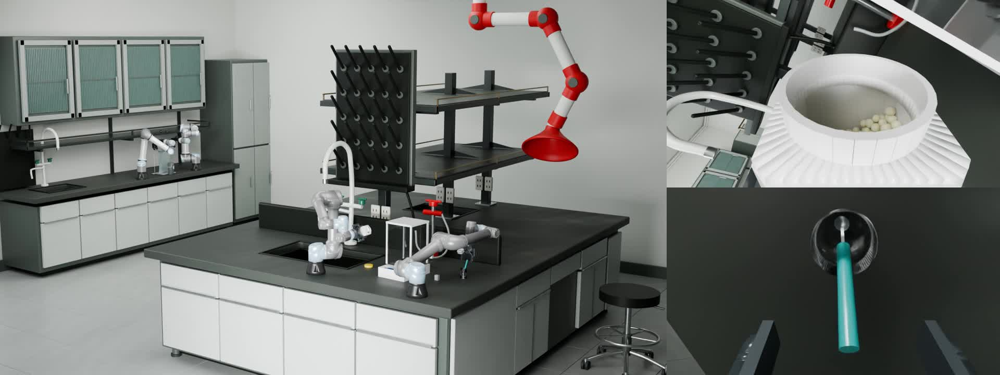

可交互的环境
围绕工厂与实验室任务，呈现场景、对象与连续操作过程。
浏览场景演示TEZOI，智能高精度具身仿真。
我们关注具身智能中的环境与物理交互，让场景不仅能被看见，也能被操作、观察与验证。
从实验室液体操作到工厂装配，将视觉呈现与接触、形变、流动和触觉结合，为机器人任务研究提供更丰富的仿真环境。
探索物理交互
围绕工厂与实验室任务，呈现场景、对象与连续操作过程。
浏览场景演示观察接触力、柔性形变与流固交互，理解操作如何影响物体。
了解研究方向探索 Ego、Agent、Simulation 与 Robotics 之间的连接路径。
体验 Playground